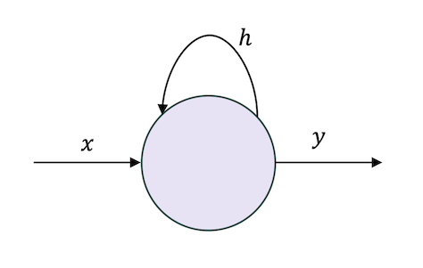
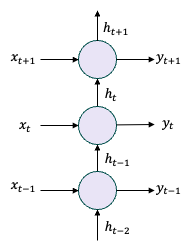
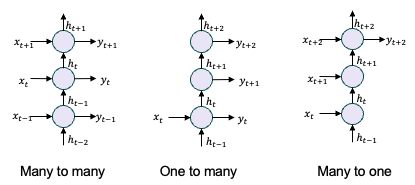
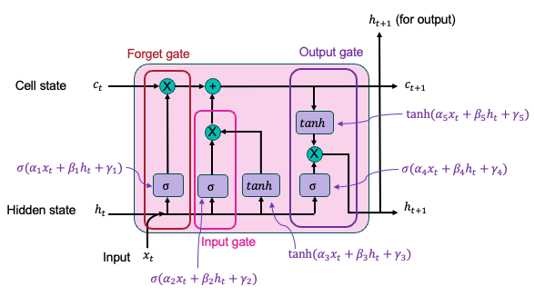
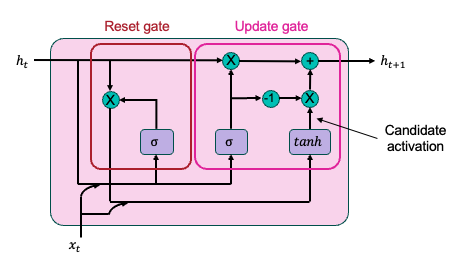

9 Recurrent Neural Networks
So far we have studied networks for which the input comprises an N-dimensional vector per data point. A broad category of data which does not easily conform to this representation is sequential or time-series data. Examples include text, speech, weather, financial markets. Recurrent neural networks are a broad category of neural network that are designed to handle this type of data.
9.1 Recurrent Unit
The defining feature of recurrent networks is that they store some hidden state between data points. The most simple example is the “recurrent unit”, illustrated schematically in Figure 9.1. The hidden state, \(h\), is computed for each input data point \(x\), and depends on the previous value of \(h\). We can write this algebraically as :
\[ \begin{align} h_t &= f_1(\alpha x_t + \beta h_{t-1} + \gamma) \\ y_t &= f_2(\theta h_t + \lambda) \end{align} \]
where \(h_t\) is the hidden state for time step \(t\), \(f_1\) and \(f_2\) are activation functions, and \(\alpha, \beta, \gamma, \theta, \lambda\) are weights and biases.

Another useful way to illustrate the recurrent unit is shown in Figure 9.2. Note that this does not show a network, instead it illustrates the calculations performed by a single recurrent unit over several time steps.

Here the input data sequence \(x_0, x_1, ... x_t, ... , x_n\) is transformed to the hidden state \(h_0, h_1, ... h_t, ... , h_n\) and the output \(y_0, y_1, ... y_t, ... , y_n\).
The recurrent unit described above is a many-to-many network, since \(n\) input data points are mapped onto \(n\) output data points. By controlling the length of input and output sequences, we may also construct many-to-one, one-to-many networks, and \(m\)-to-\(n\) networks. This is illustrated schematically in Figure 9.3 and can be written algebraically :
Many to one : \[x_0, x_1, ... x_t, ... , x_n \rightarrow y_t\]
One to many :
\[x_t \rightarrow y_0, y_1, ... y_t, ... , y_n\]
Many to many : \[x_0, x_1, ... x_t, ... , x_m \rightarrow y_0, y_1, ... y_t, ... , y_n\]

Early RNNs demonstrated the machines could learning sequential data, including basic language models [1].
9.2 Backpropagation for Recurrent Networks
The introduction of hidden state makes computation of the gradient of the loss with respect to weights a little more complicated than for standard feedforward networks. However, the procedure becomes clear when we consider the unrolled network shown in Figure 9.2. It should become clear that, much like with backpropagation through a feedforward network, we can write the gradient of the loss using the chain rule, with terms that depend on each time step. The term for the final time step can be computed first, since the gradient does not depend on previous steps. We then proceed to compute gradient terms moving backwards through time steps, hence this is frequently termed “backpropagation through time”.
9.3 Shortcomings of RNNs
The vanishing gradient problem was introduced previously. This problem occurs when backpropagation results in the product of many gradient terms \(<<1\). The gradient of the loss can become vanishingly small, resulting in slow training with high computational cost. Since recurrent networks employ backpropagation through time, the vanishing gradient problem may result in constraints on the length of sequences that can be learnt at reasonable computational cost. This was one of the main disadvantages of RNNs, and was alleviated somewhat by the introduction of gated architectures such as the LSTM and GRU, described below.
Another significant disadvantage of recurrent networks is that the forward pass over a sequence cannot be parallelised, since the value of each term in the sequence depends on the previous one. This results in long computation time, with limited possibilities for speeding up, even when significant computational power is available. Again this results in practical limitations on the length of the sequences that can be learnt.
9.4 Long Short Term Memory
The Long Short Term Memory (LSTM) was a highly successful (up to a point) attempt to resolve the vanishing gradient problem which all previous RNNs suffered from. The LSTM relies on the concept of “gating”, which controls the flow of information into and out of a hidden state. It also introduces two hidden states - one (the “cell” state) which captures all the input information in the sequence so far, the other (the “hidden” state), which depends only on the previous time step. The LSTM cell is shown in Figure 9.4. It comprises three gates - the “forget” gate, “input” gate, and “output” gate.

The LSTM represented a major breakthrough in language modelling in the mid-2010s [2], and opened up a broad range of time-series problems to machine learning. Applications included forecasting energy demand, financial markets, equipment degradation.
9.5 Gated Recurrent Unit
The Gated Recurrent Unit (GRU) is a simplified version of the LSTM, which dispenses with one hidden state, and uses only two gates.

The GRU greatly reduced the computational requirements of LSTMs, allowing applications such as speed recognition on mobile phones, predictive keyboards, battery life prediction.